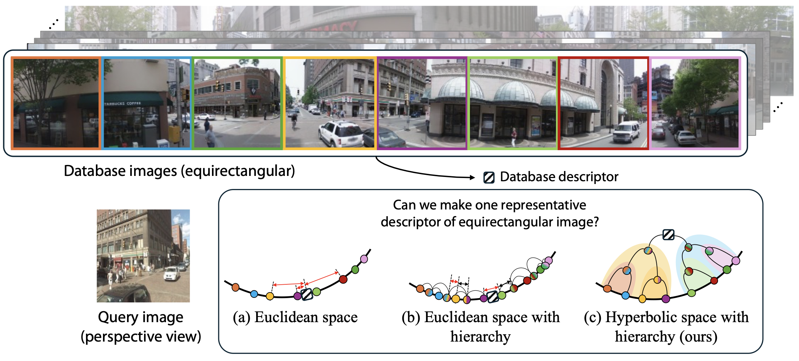
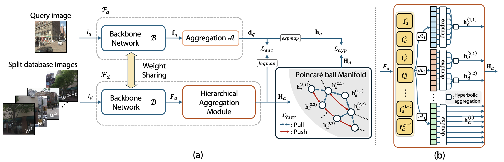
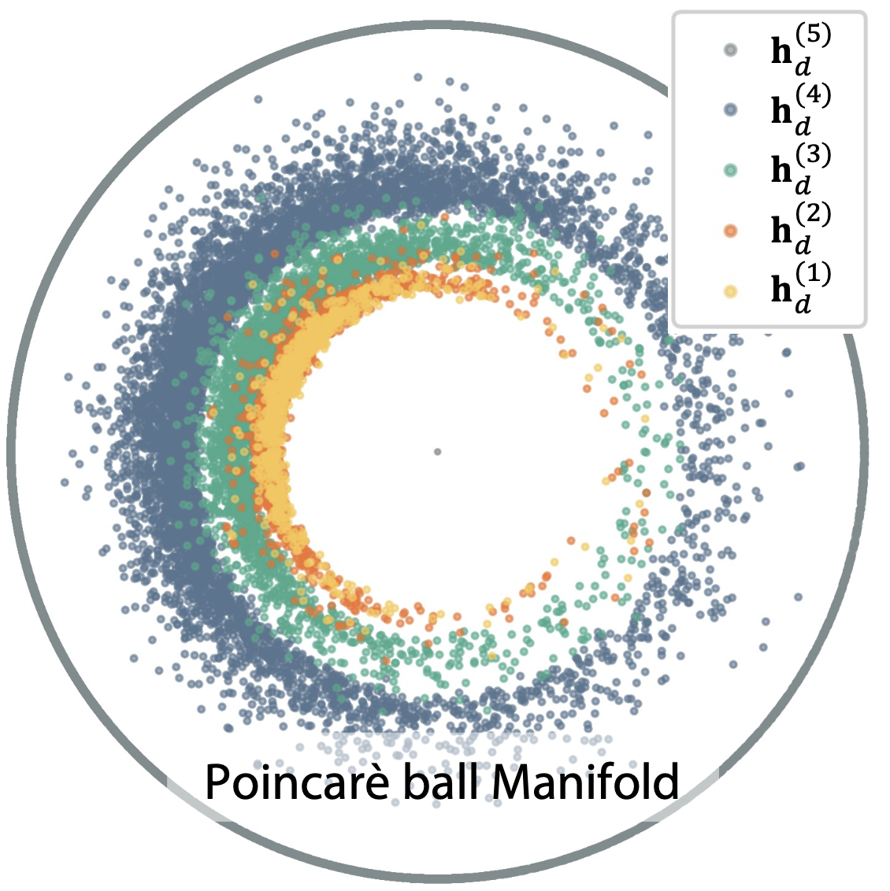
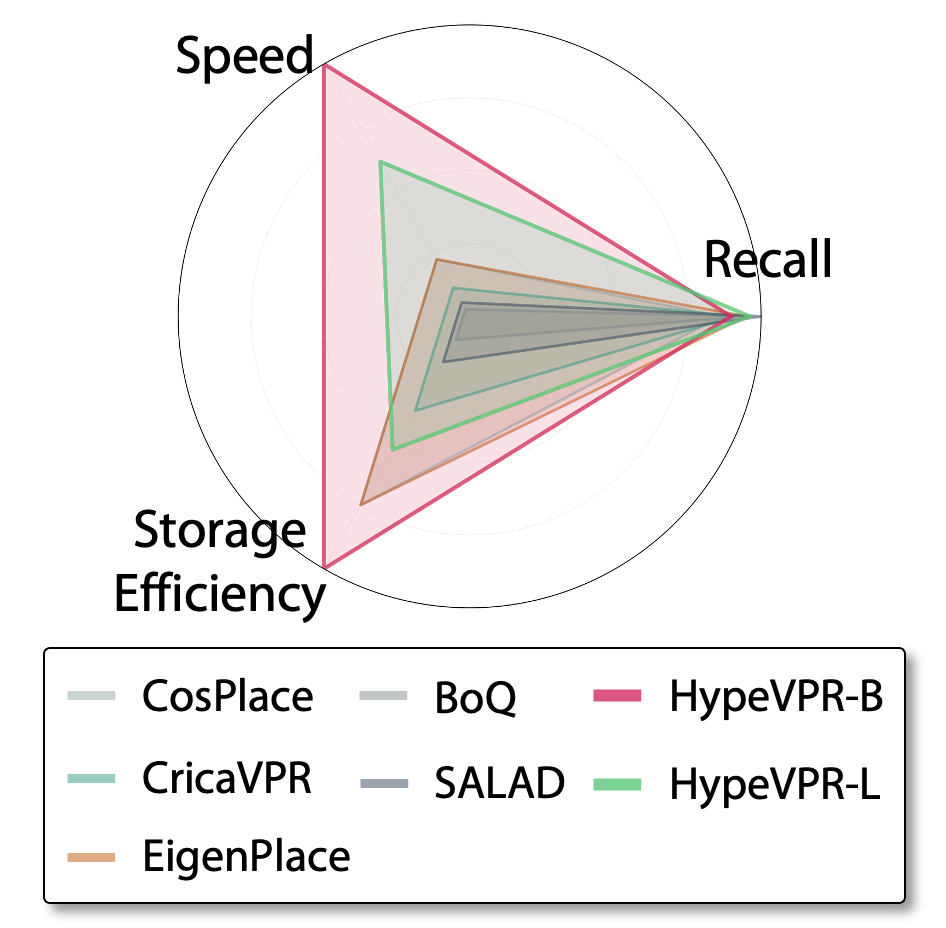
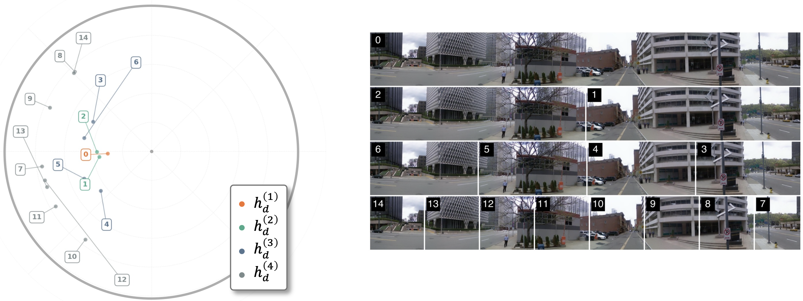
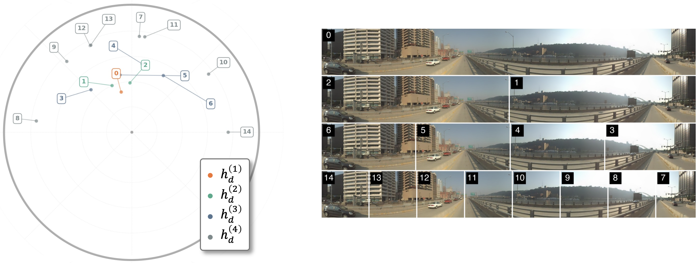
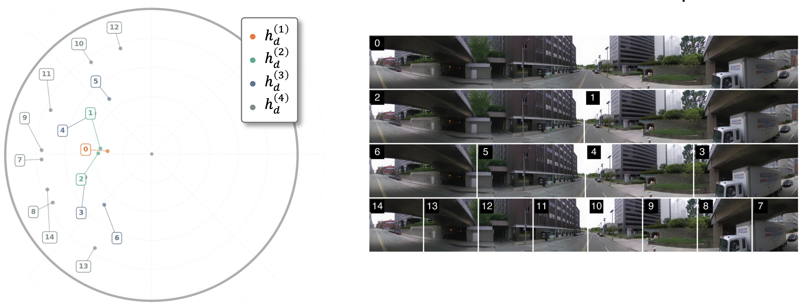
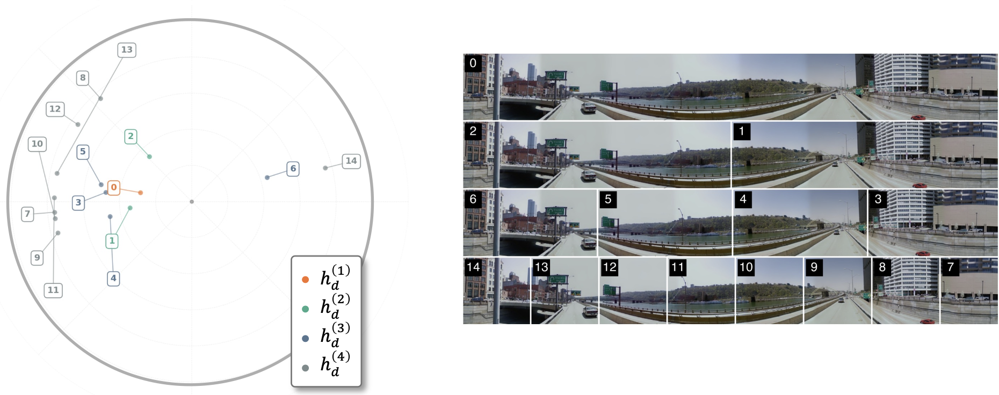

We propose a P2E matching framework that exploits the geometric properties of hyperbolic space to model panoramic hierarchy with low distortion.
Visual environments are inherently hierarchical, as a panoramic view naturally encompasses and organizes multiple perspective views within its field. Capturing this hierarchy is crucial for effective perspective-to-equirectangular (P2E) visual place recognition.
In this work, we introduce HypeVPR, a hierarchical embedding framework in hyperbolic space specifically designed to address the challenges of P2E matching. HypeVPR leverages the intrinsic ability of hyperbolic space to represent hierarchical structures, allowing panoramic descriptors to encode both broad contextual information and fine-grained local details.
To this end, we propose a hierarchical feature aggregation mechanism that organizes local-to-global feature representations within hyperbolic space. Furthermore, HypeVPR's hierarchical organization inherently enables flexible control over the accuracy-efficiency trade-off without additional training, while maintaining robust matching across different image types.
This approach enables HypeVPR to achieve competitive performance on P2E matching while offering significant advantages in database storage efficiency through its hierarchical organization in hyperbolic space.
The P2E VPR Challenge: Conventional Visual Place Recognition methods rely on perspective-to-perspective (P2P) matching, requiring densely sampled databases with view-specific images from all viewing directions. This leads to substantial storage demands and high retrieval costs, limiting scalability for real-world mobile systems.
Why Panoramic Databases? The perspective-to-equirectangular (P2E) framework offers a promising alternative by using panoramic equirectangular images in the database. Each location can be represented by a single panorama rather than multiple directional views, significantly reducing redundancy.
Why Hyperbolic Space? Panoramic views naturally encompass multiple perspective observations within a single scene. These relationships form an inherent hierarchical structure. Hyperbolic space naturally models hierarchical relationships with minimal distortion—enabling compact encoding of broad contextual structure that is difficult to achieve in Euclidean space.
HypeVPR divides each panoramic view into regions with varying fields of view (FoVs) and organizes their features hierarchically: higher levels capture coarse global context, while lower levels encode fine, localized details. This hierarchical organization enables adaptive retrieval by selectively activating descriptors at different levels, offering a flexible balance between accuracy and efficiency.
Hierarchical Modeling: HypeVPR defines an L-level structure by progressively halving the horizontal field of view of equirectangular images. The top level is the full panorama, and each subsequent level captures increasingly fine-grained spatial details.
Hierarchical Aggregation Module (HAM): The model employs a shared backbone network to extract features from both query and database images. For database panoramas, features are aggregated across multiple levels using hyperbolic averaging in the Poincaré ball model. This norm-aware weighting preserves hyperbolic geometry and enables effective multi-level descriptor fusion.
Adjustable Hierarchical Retrieval: Instead of relying solely on a top-level descriptor, HypeVPR uses lower-level descriptors to refine initial retrieval results. By controlling which hierarchy levels are activated, the system flexibly balances accuracy and efficiency without requiring additional training.

Network architecture. (a) Overall training scheme with shared backbone and hierarchical aggregation. (b) Illustration of the Hierarchical Aggregation Module (HAM), which organizes features from local to global levels within hyperbolic space.

Hierarchical Feature Organization. Visualization of 1,000 test descriptors on the Poincaré ball manifold. Higher-level descriptors (h(1)) concentrate near the origin (abstract semantics), while lower-level descriptors appear closer to the boundary (fine-grained details).

Performance Comparison. HypeVPR variants (HypeVPR-B, HypeVPR-L) achieve favorable trade-offs across speed, recall, and storage efficiency compared to state-of-the-art methods including EigenPlace, CosPlace, BoQ, CricaVPR, and SALAD.
Performance Highlights on SF-XL Dataset:
All quantitative results are evaluated on the large-scale SF-XL dataset. The original SF-XL database contains 2.8M perspective view (PV) images. By using panoramic representation, we construct a P2E benchmark with only 233,820 panoramic database images (0.23M)—reducing the database size by over 12× while maintaining full spatial coverage of the San Francisco area. This substantial reduction demonstrates the storage efficiency advantage of the P2E framework.
These visualizations show the hierarchical descriptor distribution of individual database images on the Poincaré ball. In successful cases, the highest-level (global) descriptor and lowest-level (local) descriptors are mapped to similar regions of the manifold, maintaining geometric consistency across hierarchy levels. This alignment ensures that when a query is given, both coarse and fine-grained matching produce coherent results.



In contrast, this visualization shows a failure case where the highest-level (global) descriptor and lowest-level (local) descriptors are mapped to opposite sides of the Poincaré ball, breaking hierarchical consistency. This geometric misalignment causes coarse and fine-grained matching to produce conflicting results when a query is given, ultimately leading to retrieval failure. For example, query PV image 14 fails to retrieve its corresponding database image in this case.

@inproceedings{woo2026hypevpr,
title = {HypeVPR: Exploring Hyperbolic Space for Perspective to Equirectangular Visual Place Recognition},
author = {Woo, Suhan and Lee, Seongwon and Jang, Jinwoo and Kim, Euntai},
booktitle = {Proceedings of the IEEE/CVF Conference on Computer Vision and Pattern Recognition (CVPR)},
year = {2026}
}